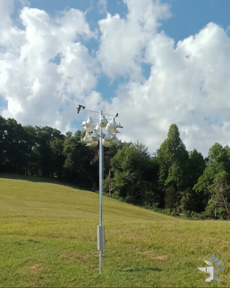
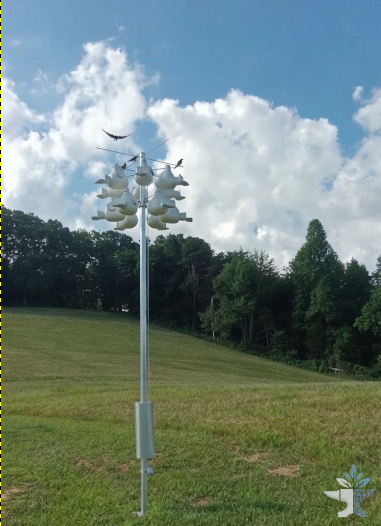
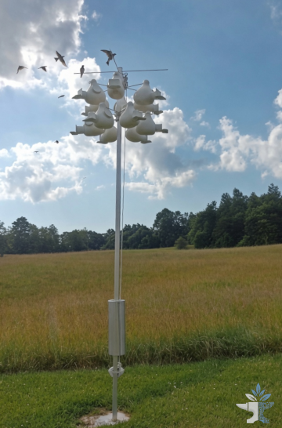
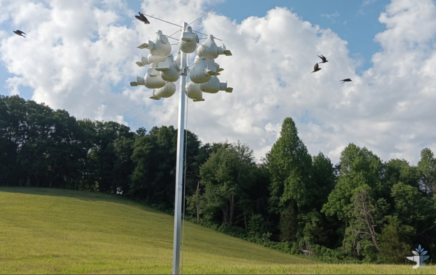
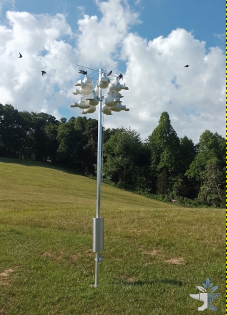

USE ARROW KEYS OR CLICK SIDES • ESC TO CLOSE


Premium gourd towers that welcome Purple Martins home to the Bluegrass each spring.
We specialize in the careful placement of high-quality Purple Martin housing — specifically the Troyer Super Deluxe 12-Gourd Rack and Conley II Vertical Gourds. These are trusted, field-proven systems that give martins the space, ventilation, and security they need to thrive.
Every installation is done with the bird’s habits in mind: proper height, clear flight paths, and proximity to open water. We begin by digging and setting a heavy steel ground stake in concrete, then allow the full recommended cure time (typically 48–72 hours) before mounting the rack and gourds. This patient approach creates a stable, long-lasting foundation built for Kentucky weather.
We serve homeowners, lake properties, and small farms in the Monticello and Lake Cumberland region who want a beautiful, low-maintenance colony without the guesswork.
We don’t rush the most important part of any tower: a rock-solid foundation. Here’s exactly how every Martins Over the Bluegrass installation unfolds.
We walk your property together. We evaluate sun exposure, prevailing winds, distance to open water, and clear flight corridors. You’ll know exactly where the tower will go and why that spot gives the colony the best chance of success.
We excavate and set a heavy steel ground stake into a properly sized concrete footing. This is the literal foundation of the entire colony — engineered for Kentucky weather, high winds, and long-term stability.
This is the step most people underestimate — and the one we refuse to skip. Fresh concrete needs time to reach full strength. We allow the full recommended 48–72 hour cure before the rack or any gourds ever go on the stake. No exceptions.
Rushing the cure is the most common cause of wobbly or failed towers later. Our patient approach gives you a foundation that will stay plumb and solid for many seasons of strong winds and weather.
With the stake fully cured and secure, we mount the Troyer Super Deluxe 12-Gourd Rack (or Conley II system) at the proper height. Each gourd is carefully positioned for ventilation, drainage, and easy access. The pulley system is tested for smooth operation.
We double-check plumb and level, confirm the full range of the pulley, verify entrance heights and gourd security, and make any micro-adjustments needed. You’ll see the finished tower operating perfectly before we leave.
We remain available through your first season and beyond. We’ll advise on the best time to open the house in spring, share simple maintenance tips, and help you recognize the exciting early signs that martins have discovered their new home.

In southern Kentucky, the first Purple Martin scouts usually arrive mid-March. Installing now gives the concrete time to cure and the tower time to settle before the birds begin scouting for housing.
A properly cured tower installed before migration gives you the strongest chance of a thriving colony this season.
These are real installations we’ve completed for families and landowners throughout the Lake Cumberland region. Each tower is sited with the same patient craftsmanship described in our process — proper foundation, full cure time, and careful placement for the birds.
New installations appear here automatically. Use the Admin panel (desktop) to add, edit, or manage photos.
Twelve spacious, well-ventilated gourds on a rugged aluminum rack with stainless hardware. The built-in four-part pulley system lets you lower the entire unit for seasonal cleaning and inspection — a feature that makes a real difference year after year.
We dig and set a heavy steel stake in concrete, then allow the full 48–72 hour cure before we ever mount the rack and gourds. No rushed jobs — just a solid foundation that will stand for years.
Purple Martins are voracious daytime hunters of flying insects — beetles, dragonflies, moths, wasps and more. A healthy colony provides wonderful natural pest management around your property and waterfront.
Martins strongly prefer housing near open water. Lake Cumberland properties offer ideal conditions — open skies, abundant insects, and the beautiful aerial displays that make summer evenings special.
Watching a colony of martins raise their young and fill the sky with acrobatic flight is a source of genuine pleasure. Many of our clients say it becomes the highlight of their summer on the water.
Purple Martins are the largest swallow in North America and one of the most beloved backyard birds in the eastern United States. Every spring they make an astonishing journey from their wintering grounds in South America to raise their families in our skies — and they’ve come to rely on people who provide thoughtful housing.
Each year Purple Martins travel thousands of miles from Brazil and other parts of South America. They return to the same nesting areas in North America spring after spring, often to the exact same colony site if they had success the year before.
Martins are aerial insectivores — they hunt and eat on the wing. A single bird can consume thousands of flying insects in a day: beetles, dragonflies, moths, wasps, flies, and more. They provide beautiful, natural pest management around homes, gardens, and waterfronts.
Unlike many birds that prefer solitude, Purple Martins like to nest in groups. That’s why a well-designed 12-gourd rack creates the perfect “apartment building” they seek. They chatter, preen, and raise their young together — a lively, social colony.


In the wild, Purple Martins once nested almost exclusively in old woodpecker holes and natural tree cavities. As forests have changed and dead trees are often removed, those natural homes have become scarce in many areas.
Today, most eastern Purple Martins rely entirely on housing provided by people. When that housing is the right size, well-ventilated, easy to clean, and placed with good flight access (especially near water), the birds thrive. Poor or neglected housing, however, often stays empty or gets taken over by invasive starlings and sparrows.
Males usually arrive first each spring to claim the best gourds and begin singing to attract mates.
They drink and bathe while flying — skimming the surface of ponds and lakes at high speed.
A healthy adult can live 5–7 years or longer, returning to the same summer home year after year.
Their acrobatic evening flights are one of the great pleasures of summer on the water — hundreds of birds twisting and turning together.
“They did it the right way — a heavy ground stake set in concrete with the proper cure time before the rack and gourds were mounted. Martins started investigating within days of the finished installation, and now we have a full colony. The evening shows over the water are incredible.”
“I wanted something that looked clean and would last. The pulley system is a game changer — I can lower it myself every spring. Highly recommend for anyone on the lake.”
“We had tried a cheap plastic house before with no luck. This Troyer rack brought the birds in the first season. Worth every penny. The whole family enjoys them.”
Proudly serving Monticello, Lake Cumberland, and all communities within a 100-mile radius.
From lakefront homes on Fishing Creek and Wolf Creek to farms across Wayne, Pulaski, Russell, Clinton, and McCreary counties — we bring professional gourd tower installations to the places Purple Martins love best.
Everything you need to know about Purple Martin towers, timing, and working with us.
Ready to welcome Purple Martins to your property?
Get a QuoteTell us a little about your property and we’ll reach out within 1–2 business days to discuss the best placement for your situation.
We've received your request and will personally review the details of your property. Expect a call or email from us within 1–2 business days to discuss the best placement and next steps for your tower.
Enter the password to manage installation photos and descriptions.